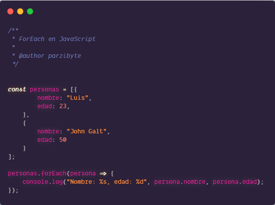

JavaScript es un lenguaje de programación o de secuencias de comandos que te permite implementar funciones complejas en páginas web, cada vez que una página web hace algo más que sentarse allí y mostrar información estática para que la veas, muestra oportunas actualizaciones de contenido, mapas interactivos, animación de Gráficos 2D/3D, desplazamiento de máquinas reproductoras de vídeo, etc., puedes apostar que probablemente JavaScript está involucrado. Es la tercera capa del pastel de las tecnologías web estándar, dos de las cuales (HTML y CSS) hemos cubierto con mucho más detalle en otras partes del Área de aprendizaje.
En este tutorial te mostraremos cómo incluir JavaScript en HTML. Al comienzo incluiremos una breve introducción a JavaScript, mientras que el resto de la guía se enfocará en varias formas de insertar JavaScript en HTML. Si quieres mostrar contenido estático, por ejemplo, un conjunto de imágenes, HTML puede hacer el trabajo por ti. Sin embargo, las páginas estáticas lentamente se están convirtiendo en una cosa del pasado. La mayoría del contenido hoy en día es interactivo e incluye presentaciones de diapositivas llamativas, formularios y menús. Estas mejoran la experiencia del usuario y le agregan dinamismo al sitio web. Esto se logra con los lenguajes de script y JavaScript es uno de los más famosos en este sentido, ya que le permite a los desarrolladores crear sitios web que interactúan con el usuario y viceversa. A pesar de que hay muchos otros lenguajes disponibles, ninguno de ellos es tan popular como JavaScript. Y para utilizarlo en su mayor potencial, se usa en conjunto con HTML.
JavaScript can change HTML content.
La mayoría de elementos pueden tomar cualquiera de varios de los atributos comunes: